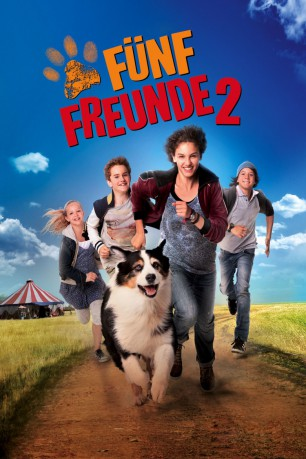
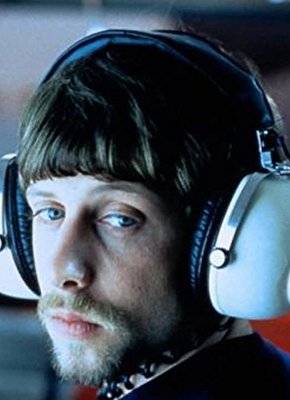

#3830 Fünf Freunde 2
 
 IMDB-Wertung: 5.5 / 10
IMDB-Wertung: 5.5 / 10  Metascore: 0
Metascore: 0 
Auf ihre Fahrradtour ins Katzenmoor haben sich die unternehmungslustigen Geschwister Julian, Dick und Anne, ihre Cousine Georgina, genannt George, sowie ihr Hund Timmy lange gefreut. Doch der Camping-Urlaub in der Natur endet mit der Entführung von Dick, den zwei minderbemittelte Ganoven mit dem gleichaltrigen Millionärssohn Hardy verwechseln. Mit Raffinesse und Mut nehmen die fünf Freunde seine Spur auf, die von einem mysteriösen Wanderzirkus zur Burg Eulennest führt, wo die Entführer Dick den Hinweis zu einem Riesensmaragd entlocken wollen.
Jahr: 2013
Dauer: 91 Minuten
FSK:
Land: Deutschland Studio: Constantin FilmTonspuren:
Untertitel:
Auflösung: 1080p (1920x1040) Größe: 6410 MB
Genre: Familie
Regisseur: Mike Marzuk
Drehbuch: Mami Sunada
Soundtrack:
Darsteller:
 Peter Lohmeyer als Rookey
Peter Lohmeyer als Rookey Heio von Stetten als Hardys Vater
Heio von Stetten als Hardys Vater Anatole Taubman als Agent Peter Turner
Anatole Taubman als Agent Peter Turner- Sascha Tschorn als Clown Salvatore
- Valeria Eisenbart als George
- Quirin Oettl als Julian
- Justus Schlingensiepen als Dick
- Neele-Marie Nickel als Anne
- Coffey als Timmy
- Kristo Ferkic als Hardy
-  Oliver Korittke als Fil
- Stefan Konarske als Max
- Sebastian Gerold als Tempelhüter, historisch
- Robert Schenker als Schwarze Katze
- Petr Dvorak als Räuber
- Alexander Hutter als Räuber
- Bastian Volkmer als Räuber
- Martin Cronebach als Räuber
- Manni Laudenbach als Zirkusdirektor
- Noah Aron Matheis als Clown Peppino
- Peter Badstübner als Kartenspieler
- Bernd Gajkowski als Kartenspieler
- Nicole Koch als Wäschefrau
- Kathrin Bargheer als Gerda
- Rüdiger Jeromin als Mechaniker
- Ron Matz als Gewichtheber
- Dominique Serwatzki als Artistin
- Milena de la Rubia als Mädchen im Zirkus
- Barbara Fröhlich als Mutter des Mädchens
- Elmar Thalmann als Butler
- Ercan Karacayli als Tempelhüter, Gegenwart
- Tobias Haas als Roby
Datei: X:\Kinder Collections\Fünf Freunde\Fünf Freunde 2 (2013, FSK, 1920x1040).mkv seit 17.06.2016
Festplatte: Kinder-Filme+Trick
 Es gibt insgesamt 8 Filme in der Gruppe 'Kinder Collections\Fünf Freunde'
Es gibt insgesamt 8 Filme in der Gruppe 'Kinder Collections\Fünf Freunde'